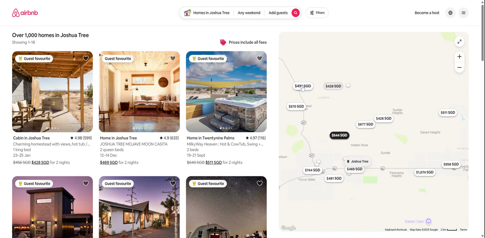
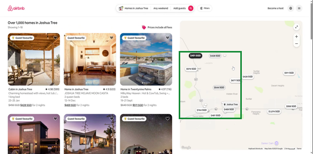
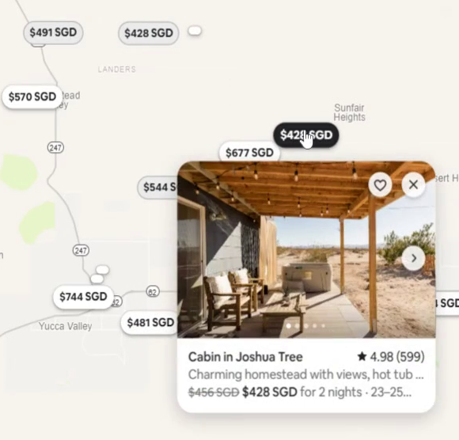
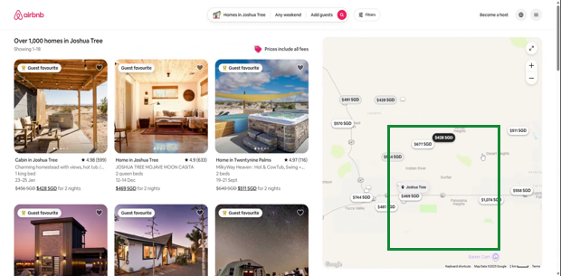
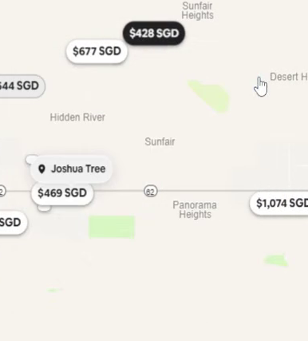
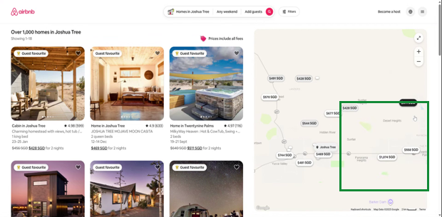
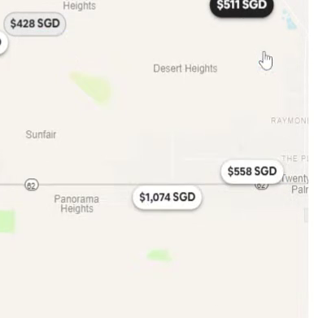

screenshot_0 · full
[1920, 944] → [1920, 944] · 保留像素 100.0% · 场景 0

算法输出预览


坐标：[0, 0, 1920, 944] · 原因：first_screenshot
算法版本：experimental_theme_aware_per_step_v2。仅用于预览，生成流程未修改。
返回任务总览 · 查看全部步骤拼图 · 查看算法判断 JSON
左侧为原图预览和选区（绿色：裁剪；蓝色：保留整图），右侧为此算法的输出预览；实验版尚未用于生成。点击图片查看原尺寸；预览自动缩放。像素减少比例不等于 token 减少比例。
[1920, 944] → [1920, 944] · 保留像素 100.0% · 场景 0
算法输出预览

坐标：[0, 0, 1920, 944] · 原因：first_screenshot
[1920, 944] → [385, 428] · 保留像素 9.1% · 场景 0
坐标：[1097, 300, 1482, 728] · 原因：localized_change
[1920, 944] → [385, 414] · 保留像素 8.8% · 场景 0
原图与选区

坐标：[1097, 314, 1482, 728] · 原因：localized_change
[1920, 944] → [580, 556] · 保留像素 17.8% · 场景 0
算法输出预览

坐标：[1132, 300, 1712, 856] · 原因：localized_change
[1920, 944] → [386, 427] · 保留像素 9.1% · 场景 0
原图与选区

算法输出预览

坐标：[1326, 429, 1712, 856] · 原因：localized_change
[1920, 944] → [408, 427] · 保留像素 9.6% · 场景 0
坐标：[1454, 405, 1862, 832] · 原因：localized_change
[1920, 944] → [386, 391] · 保留像素 8.3% · 场景 0
原图与选区

算法输出预览

坐标：[1476, 441, 1862, 832] · 原因：localized_change